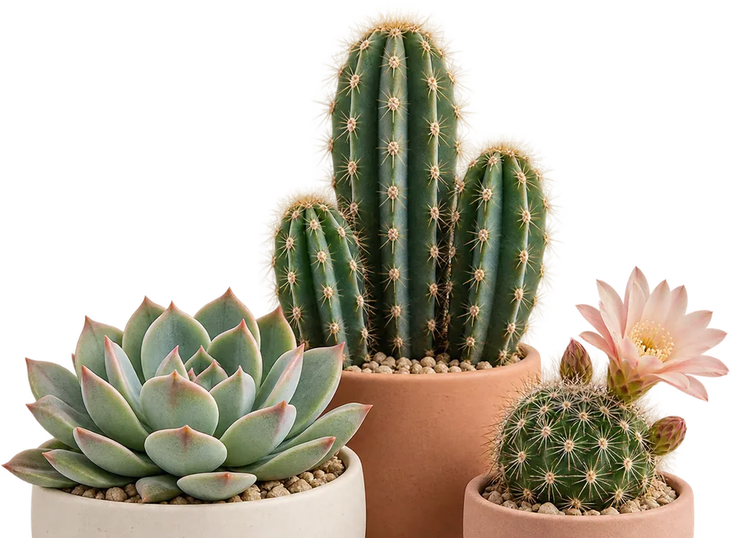
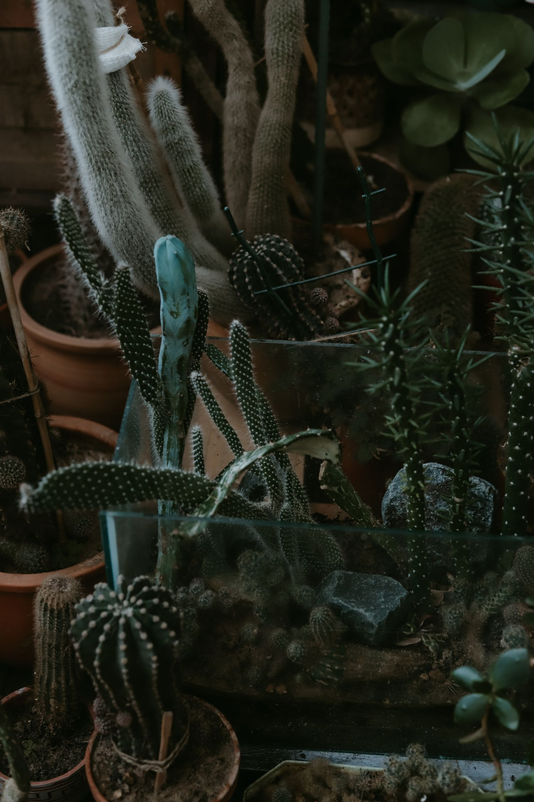
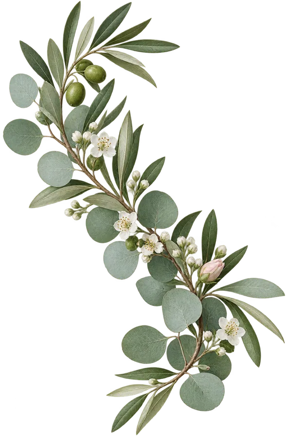

Un detalle singular
Cactus y plantas aportan formas y texturas muy diferentes.
Pequeños, esculturales, frondosos: cada planta aporta algo distinto. Consulta qué cactus y plantas hay en Siempre Vive en este momento.
 Imagen ilustrativa
Imagen ilustrativa
Hay quien busca un acento verde discreto y quien prefiere una planta que se convierta en protagonista. Esta selección te invita a imaginar posibilidades; la disponibilidad concreta se confirma en tienda.
Cactus y plantas aportan formas y texturas muy diferentes.
Cuéntanos dónde quieres colocarlo y qué te gusta.
Consulta las especies disponibles antes de decidir.

Formas escultóricas, espinas y tallos carnosos cuentan la adaptación de muchas plantas a periodos secos.
Los cactus pertenecen a una familia botánica concreta; las suculentas, en cambio, son plantas de distintas familias que comparten la capacidad de almacenar agua. No todo lo espinoso es un cactus y no todas las suculentas desean el mismo sol. Su historia natural es una lección de adaptación, no una invitación a olvidarse de regarlas.
La mayoría necesita mucha claridad. Acostumbra gradualmente a los ejemplares al sol intenso para evitar quemaduras.
Usa una mezcla muy drenante y una maceta con salida de agua; nunca dejes agua acumulada en el plato.
Comprueba la superficie del sustrato; cuando esté seca, riega bien y deja escurrir. Evita pequeños sorbos diarios.
Muchos cactus y suculentas requieren mucho menos riego cuando baja la luz y se ralentiza el crecimiento.
Un cactus de Navidad u otro epífito no debe recibir automáticamente la pauta de un cactus desértico: pregunta por su identificación.
La mayoría de cactus de ambiente seco necesita luz y un sustrato muy drenante. Comprueba siempre la especie: los cactus de bosque son una excepción.
Una mezcla específica para cactus y suculentas, sin turba y con fracción mineral o gravilla, favorece el drenaje. Evita tierra pesada que permanezca empapada.
Sí. No basta con poner piedras en el fondo de una maceta cerrada: el exceso de agua debe poder salir.
No. En crecimiento, revisa si la superficie del sustrato está seca; cuando corresponda, riega bien y deja escurrir. Ajusta según especie y ambiente.
No. Muchos cactus reducen su actividad con menos luz y requieren poco o ningún riego invernal. Los de bosque, como Schlumbergera, siguen otra pauta.
Aclimata gradualmente si la planta venía de interior. Un cambio brusco a sol fuerte puede marcar o quemar los tejidos.
El tejido blando y el sustrato húmedo pueden indicar exceso de agua. Detén el riego y consulta la especie y el estado de las raíces.
La flor o planta cambia un espacio cuando su tamaño, luz y función se tienen en cuenta.
Funciona para especies de sol, siempre que el calor tras el cristal no sea extremo.
Combina alturas y formas; deja espacio para manipular macetas con espinas.
Solo con especies aptas para exterior y protegidas del exceso de lluvia.
La mayoría pierde vigor y forma cuando pasa demasiado tiempo sin luz.

Escríbenos con tu idea para consultar disponibilidad y detalles. Las fotografías son de inspiración y no representan productos disponibles en tienda.